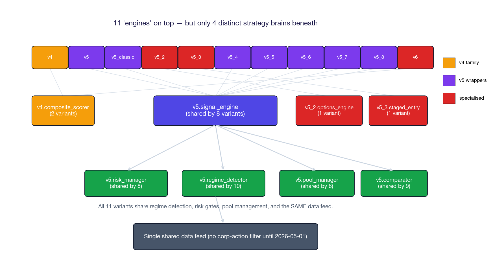
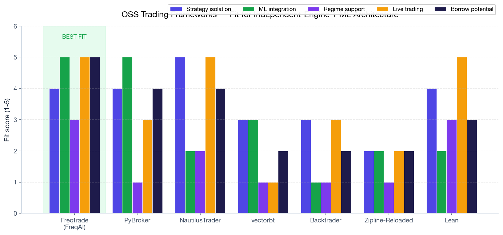
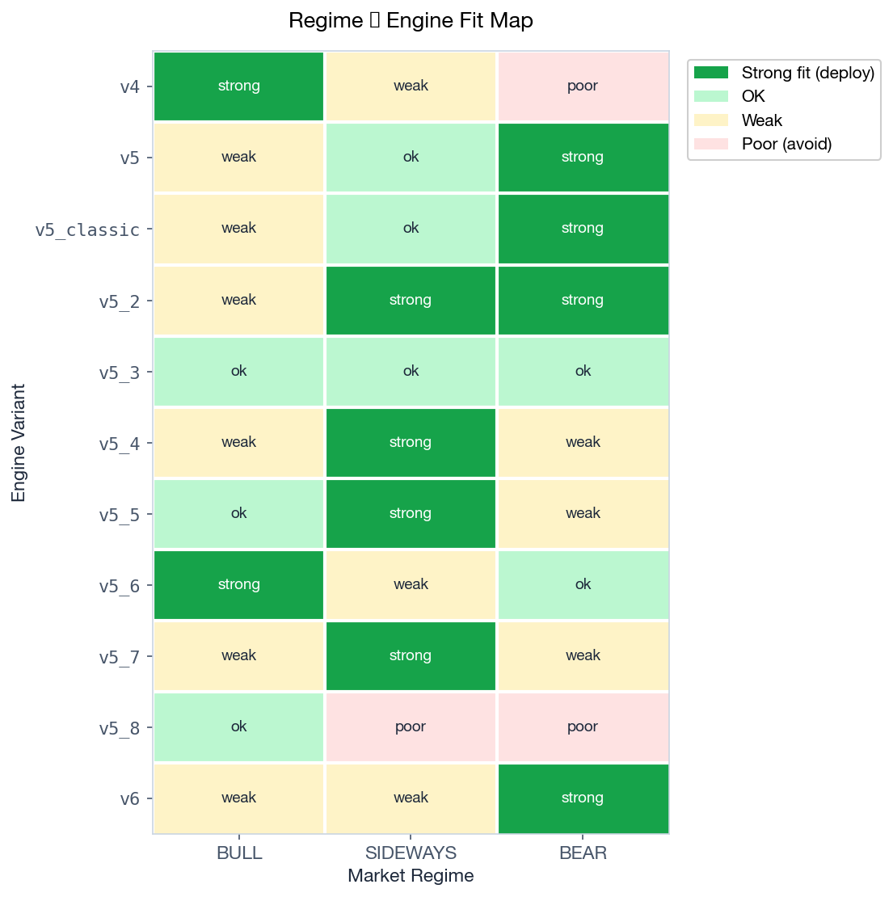
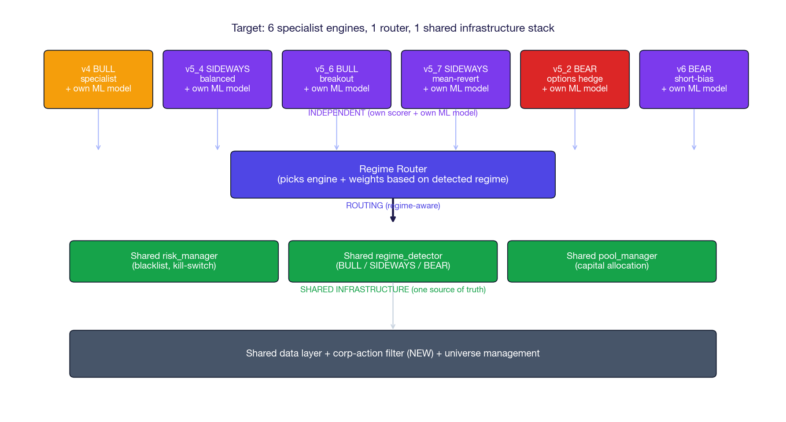
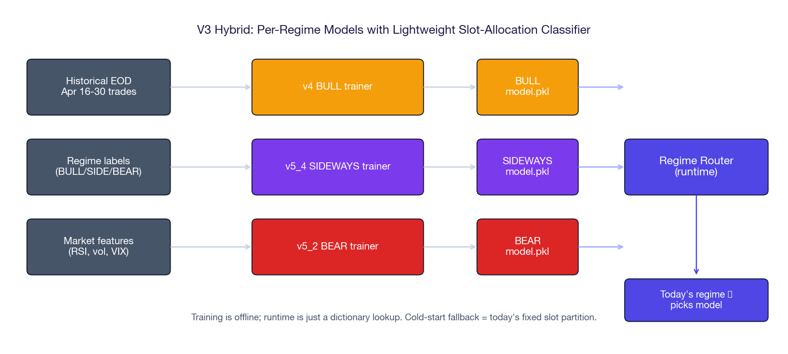
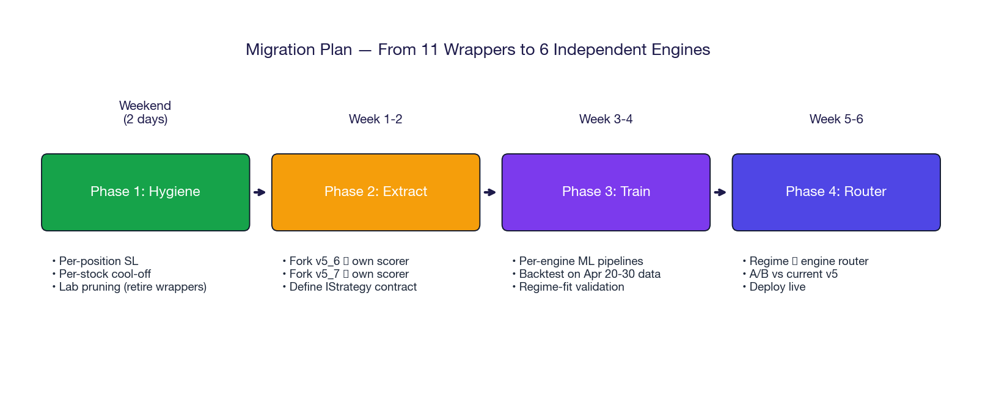

From 11 wrappers around one brain to 6 specialist engines, each with its own ML model
Yesterday's RCA exposed an uncomfortable truth: TradePilot has 11 paper-trading variants but only 4 distinct strategy brains beneath them. Seven of the eleven (v5, v5_classic, v5_4, v5_5, v5_6, v5_7, v5_8) share the same v5.signal_engine via dynamic importlib calls. They differ only in slot-partition tweaks, exit-rule overrides, or output directory.
This report answers three questions:
Adopt Freqtrade's IStrategy + FreqAI pattern for engine isolation, layered on a shared regime router. Train one ML model per detected regime (BULL / SIDEWAYS / BEAR) using the lightweight V3 Hybrid approach — no full retraining of every signal, just a per-regime slot-allocation classifier. Cold-start fallback = today's fixed slot partition.

One research agent missed the importlib import pattern (variants register modules in a dict like "signals": ("prototype.v5.signal_engine", "generate_signals") then dynamically load). After direct verification:
| Variant | Strategy brain | Risk + regime + pool layer | Independence |
|---|---|---|---|
v4 | Own (v4.composite_scorer inline) | Own (v4 risk controls) | true engine |
v5 | v5.signal_engine (shared) | v5.risk_manager (shared) | wrapper |
v5_classic | v5.signal_engine (shared) | v5.risk_manager (shared) | near-duplicate of v5 |
v5_2 | Own (v5_2.options_engine) | v5.risk_manager (shared) | true (F&O) |
v5_3 | v5.signal_engine + own v5_3.staged_entry | v5.risk_manager (shared) | extension |
v5_4 | v5.signal_engine (shared) | v5.risk_manager (shared) | wrapper (direction budget) |
v5_5 | v5.signal_engine (shared) | v5.risk_manager (shared) | wrapper (exit logic) |
v5_6 | v5.signal_engine + own v5_6.darvas_box | v5.risk_manager (shared) | extension |
v5_7 | v5.signal_engine + own v5_7.intraday_box | v5.risk_manager (shared) | extension |
v5_8 | v5.signal_engine + monkey-patch | v5.risk_manager + monkey-patch | wrapper (slot-cap experiment) |
v6 | Direct v4.composite_scorer (skips v5.signal_engine) | v5.risk_manager (shared) | hybrid |
You can't train 7 independent ML models when 7 variants share one scorer. The training data they generate is essentially the same data with different slot-allocation rules applied on top. To get genuinely independent training signal, each variant needs its own scorer module (or the scorer needs explicit per-variant model files).
Surveyed 7 actively-maintained Python trading frameworks. The question wasn't "which is best in general" — it was "which has the cleanest pattern for independent strategies + per-strategy ML training". That's a narrower lens.

| Capability | What FreqAI gives us | How we'd adapt it |
|---|---|---|
| Strategy isolation | IStrategy base class — each strategy is a self-contained Python class with its own scorer, indicators, and entry/exit logic | Map our v5_6, v5_7, etc. to subclasses; one file per engine |
| Per-strategy ML | FreqaiDataDrawer — separate data + model registry per strategy, trained in background threads without blocking live execution | Each engine gets its own models/<engine>/ directory; train nightly |
| Walk-forward retraining | Built-in time-series CV; retrains every N candles to avoid look-ahead bias | Set retrain cadence per engine (e.g. weekly for SWING, daily for INTRADAY) |
| Hyperparameter search | Hyperopt module — multi-objective optimisation (return + drawdown) | Use for per-regime tuning (separate hyperopt run per BULL/SIDEWAYS/BEAR) |
composite_scorer.pykiteconnect, kite-connect samples, etc. — these are broker adapters, not engine architectures. Useful when we go live on Zerodha; don't model our engine after them.Each variant has a natural regime where it should outperform. Today they all run on every regime, which is why the lab averages mediocre across the board. Mapping each engine to its best regime is the prerequisite for regime-routed ML.

| Variant | Style | Best regime | Evidence |
|---|---|---|---|
v4 | LONG-only composite scorer | BULL | Apr 28: +Rs 47K, 71% WR on green-tape day. No SHORT gate. |
v5 | Multi-pool, regime-aware partition | BEAR | BEAR partition reserves 12 SHORT slots; v5 outperforms in BEAR-labelled days |
v5_classic | Apr 16 v5 snapshot | BEAR | Near-duplicate of v5; serves as A/B baseline only |
v5_2 | F&O straddle/puts | SIDEWAYS / BEAR | Straddle selling thrives in low-vol SIDEWAYS; puts hedge in BEAR |
v5_3 | 3-stage entry with confirmation | ANY | Optimised for false-positive avoidance, not regime fit |
v5_4 | Regime-weighted L/S split (50/50 in SIDEWAYS) | SIDEWAYS | +Rs 16K Apr 29; balanced bias suits range-bound days |
v5_5 | Exit-tuning: HOLD in BULL, SELL in others | SIDEWAYS / BULL | +Rs 17K Apr 29; reduces churn from signal flips |
v5_6 | Darvas box breakout + dynamic SL/TP | BULL | Breakout strategies fire on trends; weak in chop |
v5_7 | Mean reversion on prior day's box | SIDEWAYS | +Rs 26.8K Apr 29 — best performer; bounce trades thrive in chop |
v5_8 | Slot cap disabled (LONG-heavy) | BULL only | −Rs 11K Apr 29 — hypothesis rejected; partition mattered |
v6 | Raw v4 scorer + Track A guards (SHORT-bias) | BEAR | Mechanical SHORT gate triggers in BEAR regime |
After consolidation: v4 (BULL specialist), v5_4 (SIDEWAYS balanced), v5_6 (BULL breakout), v5_7 (SIDEWAYS mean-revert), v5_2 (BEAR options hedge), v6 (BEAR short-bias). Retire v5_classic (duplicate of v5), v5_8 (failed experiment), v5_3 (general-purpose with no regime fit), and likely v5 + v5_5 after picking which one is the SIDEWAYS workhorse.

| Tier | What lives here | Independence | Why this split |
|---|---|---|---|
| Engine layer | One module per engine: own scorer, own indicators, own ML model file | 100% independent | Clean A/B; per-engine ML training has unique data |
| Router layer | Regime detector → engine selector. Today might run v5_7 only; tomorrow if regime flips to BEAR, route to v5_2 + v6 | routing logic only | The "which engine, when" decision is itself a small ML problem |
| Infrastructure layer | Risk gates (blacklist, kill-switch), pool manager, regime detector, data feed (with corp-action filter), execution simulator | shared, single source of truth | Hygiene fixes apply once, propagate everywhere |
The risk_manager.py patch shipped 2026-05-01 (blacklist auto-loader, baseline kill-switch, corp-action filter) lives in the infrastructure layer. Every engine inherits these protections automatically — that's the whole point of the layer split.
engines/ directory — one Python module per engine with the IStrategy contract (analogous to Freqtrade)models/<engine>/<regime>/model.pklgenerate_signals(quotes, state) -> List[Signal] + train(history) -> Model + evaluate(history) -> MetricsThree patterns are viable. The recommendation is V3 Hybrid because it builds on what already works (your existing regime detector + slot partition) without requiring a full ML rewrite.
| Pattern | Architecture | Effort | Risk |
|---|---|---|---|
| V1 — One model per regime | Train 3 Random Forests (BULL/SIDEWAYS/BEAR) on historical signal+outcome pairs. At runtime, regime label picks model. | ~1 week | Hard switching at regime boundaries causes whiplash |
| V2 — Weighted ensemble | Train per-regime models PLUS a confidence classifier (HMM). Final signal = weighted average where weights = regime-classifier confidence. Smooth transitions. | ~3 weeks | HMM training is delicate; confidence calibration is hard |
| V3 — Slot-allocation hybrid RECOMMENDED | Keep existing scorer. Train a lightweight gradient-boosted classifier: f(regime, RSI, vol, vix) → (long_slots, short_slots). Use Apr 20-30 outcomes. | ~3-4 days | Cold-start fallback to today's fixed partition is trivial |

10 days of data is too little for a full ML model — V3's strength is that it only needs to learn a small allocation policy, not a full signal predictor. For V1/V2, you'd want ~3-6 months of regime-labelled history, which you don't yet have. V3 gets you started; V2 is the year-end target once you've accumulated 3+ months of clean data.

| # | Task | Effort |
|---|---|---|
| 1 | Per-position absolute Rs SL (force-close at −Rs 25K) | ~3 hr |
| 2 | Per-stock cool-off across variants | ~4 hr |
| 3 | Retire v5_classic + v5_8 (wrappers with no unique value) | ~30 min |
| # | Task | Effort |
|---|---|---|
| 4 | Define IStrategy base class — borrow Freqtrade's contract | ~2 hr |
| 5 | Fork v5_7 (best SIDEWAYS performer) into own scorer + own model dir | ~6 hr |
| 6 | Run side-by-side with current v5_7 wrapper for 3 days | passive |
| 7 | If parity confirmed, fork v5_6 + v6 the same way | ~6 hr each |
| # | Task | Effort |
|---|---|---|
| 8 | Stand up training pipeline (sklearn / lightgbm) | ~4 hr |
| 9 | Train V3 hybrid slot-allocator per engine on Apr 20-30 data | ~6 hr |
| 10 | Backtest each engine on its target regime | ~2 hr |
| # | Task | Effort |
|---|---|---|
| 11 | Build router: regime label → engine + weight selection | ~3 hr |
| 12 | A/B for 1 week: router vs current v5 | passive |
| 13 | If router wins, retire wrappers; declare v7 architecture | ~1 hr |
This document is research, not implementation. Three decisions unblock Phase 2:
| # | Decision | Default if you say nothing |
|---|---|---|
| 1 | Which engine to fork first as the proof-of-concept? Recommend v5_7 (best SIDEWAYS performer Apr 29) because it already has its own intraday_box.py module — half the work is done. | Fork v5_7 |
| 2 | Adopt Freqtrade's IStrategy contract verbatim, or write our own contract? Adopting borrows their docs + ecosystem; rolling own keeps full control of the abstraction. | Write our own (lighter) |
| 3 | V1, V2, or V3 for ML? V3 hybrid is the recommendation — small, reversible, builds on what works. | V3 Hybrid |
| 4 | Pruning aggressiveness: retire 5 wrappers (v5_classic, v5_8, v5_3, v5_5, v5) immediately, or keep them running through the migration? | Retire only the 2 with no value (v5_classic, v5_8); decide on others after Phase 2 parity test |
The first concrete engineering work is Phase 2 Task 4 — defining the IStrategy base class. That's a 2-hour exercise. Want me to draft it as the next session's deliverable?
Eleven paper-trading variants that look like independent engines but actually share one scorer (v5.signal_engine or v4.composite_scorer) plus the entire risk + regime + pool stack. Differences between variants are mostly slot-partition tweaks, exit-rule overrides, and output directory.
Six specialist engines (v4 BULL · v5_4 SIDEWAYS · v5_6 BULL-breakout · v5_7 SIDEWAYS-revert · v5_2 BEAR-options · v6 BEAR-short), each with its own scorer + ML model, sitting on top of a shared infrastructure layer (your already-patched risk_manager.py, regime detector, pool manager, data feed with corp-action filter). A thin regime router picks which engine runs given today's detected regime.
Borrow Freqtrade's IStrategy + FreqAI patterns; don't model on Backtrader or vectorbt. Use the V3 Hybrid ML pattern (lightweight per-regime slot-allocation classifier) instead of full per-regime model training — you don't have enough data yet for full models. Fork engines one at a time over 6 weeks; A/B every step against the current wrapper.
Pick the first engine to fork (recommend v5_7) and approve V3 Hybrid as the ML approach. Everything else can be deferred until Phase 2 starts.